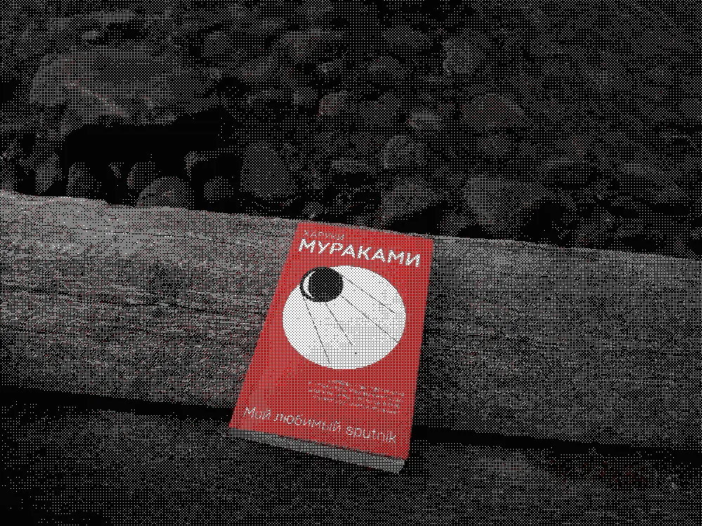

Мой любимый Sputnik - Харуки Мураками
5 / 10 - Полиморфизм любви
Здесь есть практически все ингредиенты успеха Мураками: несносная любовь, трагедия, страсть, загадка. Наверное, я вырос из Мураками. Сердце очерствело. Мои циничные взгляды не позволят мне глубоко проникнуться переживаниями юных леди.
Если другие произведения Мураками были в меру сенсации гармонично пошлыми в контексте романтики, то эта книга показалась мне местами откровенно грязной и написанной только ради этой сублимации извращения.
Пишет Мураками, конечно же, всегда легко и интересно. Он безусловный мастер слова. Благодаря этой книге я знаю в чем отличие между знаком и символом. Пожалуй, это главное, что я могу унести из этой книги в своей голове кроме сумбурных образов красивой мечты.